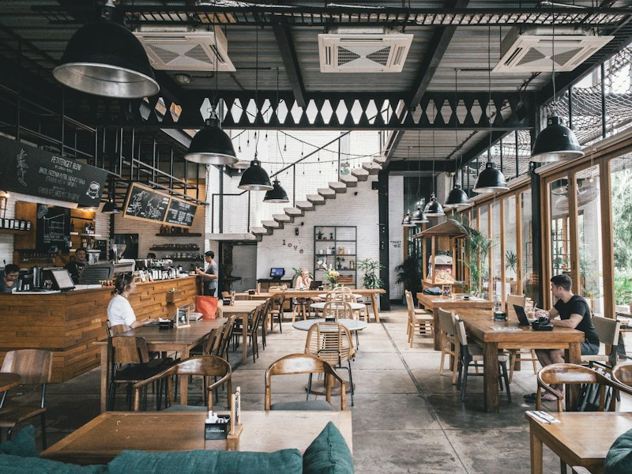

Treasures of the Land Below the Wind
Browse through key landmarks, natural wonders, and culinary staples that define everyday life in Kota Kinabalu. Use the interactive category buttons below to explore.
 Nature
Nature
Mount Kinabalu
Standing tall at 4,095 meters, this UNESCO World Heritage monument is the sacred heart of Sabah and a bucket-list destination for trekkers worldwide.
Tanjung Aru Beach
Famed across the globe for some of the top-ranked sunset vistas on earth, where skies ignite in deep hues of gold, crimson, and lavender.
City Center & Waterfront
A thriving coastal metropolis that seamlessly blends modern commercial malls, dynamic night markets, and maritime heritage along the South China Sea.
 Nature
Nature
Ancient Rainforest Canopies
Surrounding the city are 130-million-year-old rainforests sheltering rare flora, endemic hornbills, proboscis monkeys, and the giant Rafflesia.

CuisineCulinary Delights & Seafood
From aromatic handmade Tuaran noodles and fresh wild seafood feasts to Hinava (traditional lime-marinated fish), KK is a culinary paradise.
 Coastal
Coastal
Tunku Abdul Rahman Marine Park
A cluster of 5 tropical islands (Manukan, Sapi, Mamutik, Gaya, and Sulug) just 15 minutes by speedboat, ideal for snorkeling and coral reef diving.
Hometown Quick Facts: Kota Kinabalu
Key geographic and cultural hallmarks of Sabah's vibrant capital city.